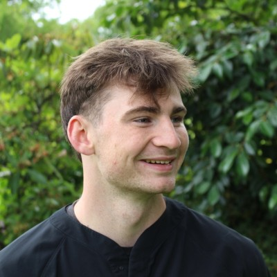

Mechanical Engineering Portfolio
About
I am a Mechanical Engineering student at Oregon State University focused on product design and manufacturing, currently working as a Transmission Line Engineer Intern at WSP.
Outside of engineering I am passionate about travel and team leadership, both of which continue to shape how I approach projects and people.

Travel Map
Drag, zoom, and click pins to explore my travel history. Pinned locations represent places I have visited.
Education Journey
Use the arrows or click a timeline stop to move through each stage.